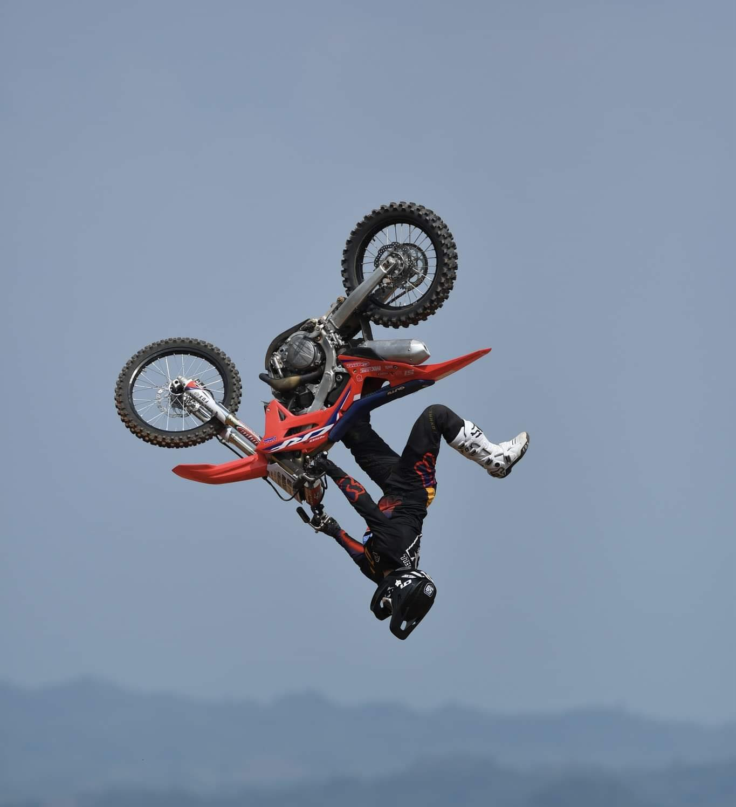

Panagdadapun Festival comes from the word panagdadapun, which is a word in Ilocano language that means gathering. The high point of the fest is the Araw ng Quirino Foundation, which translates to Quirino Foundation Day, that celebrates the founding of the province.
MOTORISMO
Quirino Motorismo: Revving up tourism in Quirino Province since 2015! Governor Junie Cua introduced this thrilling event as a spotlight on our culture and attractions. Join us in celebrating our founding day at the annual Panagdadapun Festival with motocross and the Quirino to Quirino ride.

ARTS AND CULTURE
The cultural heritage of Quirino Province is a fascinating blend of various ethno-linguistic groups and indigenous peoples from the north.The Quirino's cultural heritage of the Dumagats, Ifugaos, Isinays, Bugkalots, and Gaddang indigenous folk, and lowland villagers like the Ilocanos are always cherished for their contributions in the province.